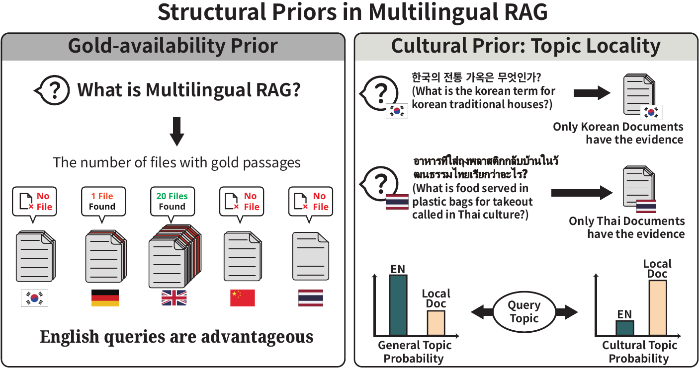
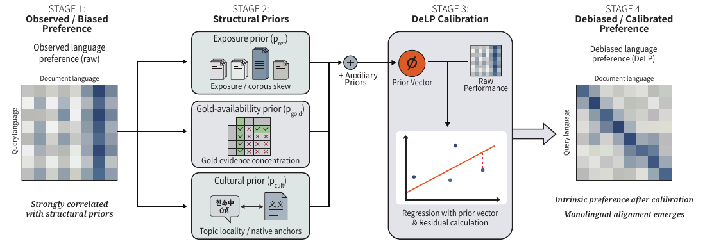
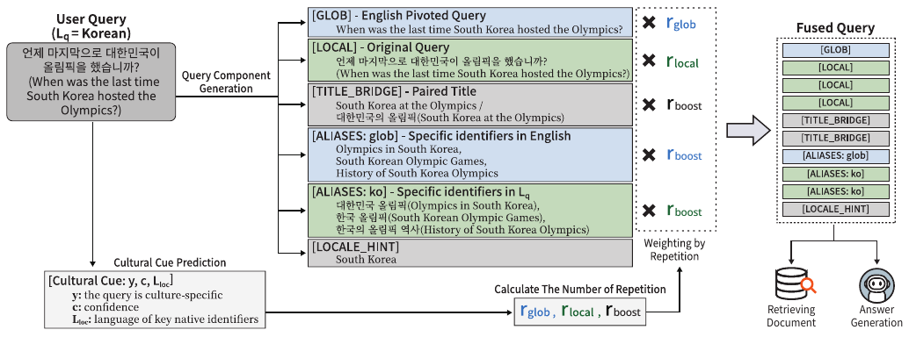

Multilingual Retrieval-Augmented Generation (mRAG) systems often exhibit a perceived preference for high-resource languages—particularly English—resulting in the widespread adoption of English pivoting. While prior studies attribute this advantage to the superior English-centric capabilities of LLMs, we find that such measurements are significantly distorted by structural priors inherent in evaluation benchmarks.
We identify exposure bias, a gold availability prior, and cultural priors as factors that hinder accurate assessment. To address these, we propose DeLP, a calibrated metric revealing that retrievers fundamentally favor monolingual alignment. Building on this, we introduce DELTA, a lightweight mRAG framework that consistently outperforms English pivoting and mRAG baselines across diverse languages.
We challenge the assumption that English pivoting works due to English-centric LLM capabilities, showing the gains stem from retrieval-side structural biases.

High-resource corpora dominate top retrieval results regardless of the encoder's linguistic intent—a "popularity bias" that artificially inflates English performance.
For most queries, English Wikipedia is the sole repository of ground-truth. Retrieval is forced into English because local-language gold doesn't exist.
Locale-tied queries contain native surface forms that act as retrieval anchors. A language appears "preferred" due to topic locality, not model tendency.
DeLP regresses out structural confounds via ridge regression. The residual is the true debiased preference.

For each language pair \((L_q, L_d)\), we stack covariates:
DELTA fuses global and local cues into a single preference-aligned query—with no corpus or retriever modifications.

[LOCAL] (3×)[GLOB] (2×) for English back-off[TITLE_BRIDGE] + [ALIASES]Setup: MKQA · BGE-m3 retriever/re-ranker · Top-50 → re-rank → Top-5 · Char 3-gram recall · Qwen3-235B, Gemini-2.5-Flash, DeepSeek-v3.1
| Method | en | ar | es | zh | ja | de | ko | th | AVG↑ | Lat.↓ |
|---|---|---|---|---|---|---|---|---|---|---|
| Qwen3-235B | ||||||||||
| Document Level | ||||||||||
| MultiRAG | 70.05 | 47.79 | 63.76 | 37.52 | 46.60 | 63.81 | 40.14 | 40.73 | 51.30 | 1.38 |
| CrossRAG | 68.21 | 43.95 | 61.14 | 37.81 | 44.75 | 60.16 | 38.13 | 42.87 | 49.63 | 1.29 |
| DKM-RAG | 69.13 | 42.69 | 62.12 | 35.13 | 43.90 | 61.13 | 39.49 | 38.88 | 49.06 | 3.80 |
| QTT-RAG | 70.11 | 46.44 | 63.02 | 37.68 | 46.94 | 62.79 | 44.13 | 42.12 | 51.65 | 1.80 |
| Query Level | ||||||||||
| Eng. Translation | — | 55.14 | 61.94 | 59.53 | 59.29 | 60.72 | 54.57 | 60.46 | 58.81 | 1.17 |
| DELTA (Ours) | 63.85 | 62.55 | 63.03 | 62.59 | 62.38 | 62.86 | 63.26 | 62.51 | 62.88 | 1.13 |
| Gemini-2.5-Flash | ||||||||||
| Document Level | ||||||||||
| MultiRAG | 58.26 | 40.79 | 55.11 | 30.81 | 44.26 | 53.52 | 35.97 | 31.65 | 43.80 | 1.53 |
| CrossRAG | 63.40 | 41.87 | 57.24 | 29.74 | 44.14 | 56.80 | 36.09 | 32.49 | 45.22 | 2.60 |
| DKM-RAG | 64.21 | 39.41 | 59.26 | 31.34 | 43.45 | 57.74 | 37.26 | 33.64 | 45.79 | 5.63 |
| QTT-RAG | 65.32 | 42.64 | 57.81 | 31.56 | 45.18 | 56.27 | 40.65 | 35.97 | 46.93 | 5.55 |
| Query Level | ||||||||||
| Eng. Translation | — | 48.44 | 55.84 | 53.59 | 53.68 | 55.17 | 47.67 | 54.86 | 52.75 | 1.55 |
| DELTA (Ours) | 56.97 | 56.45 | 55.95 | 55.83 | 56.18 | 55.98 | 56.44 | 56.45 | 56.28 | 1.48 |
| DeepSeek-v3.1 | ||||||||||
| Document Level | ||||||||||
| MultiRAG | 60.77 | 43.64 | 56.22 | 33.14 | 44.72 | 54.16 | 34.21 | 36.80 | 45.46 | 2.56 |
| CrossRAG | 67.83 | 48.34 | 62.24 | 39.05 | 49.27 | 61.33 | 39.85 | 45.70 | 51.70 | 2.64 |
| DKM-RAG | 67.84 | 44.07 | 62.49 | 37.63 | 45.66 | 61.65 | 40.30 | 40.38 | 50.00 | 2.39 |
| QTT-RAG | 68.28 | 46.13 | 61.81 | 37.24 | 47.36 | 60.48 | 41.06 | 41.29 | 50.46 | 1.93 |
| Query Level | ||||||||||
| Eng. Translation | — | 50.97 | 58.32 | 56.11 | 56.52 | 56.92 | 50.49 | 57.52 | 55.26 | 2.05 |
| DELTA (Ours) | 59.85 | 59.46 | 58.61 | 59.67 | 59.02 | 59.25 | 53.51 | 56.45 | 58.23 | 1.13 |
@article{park2026enhancing,
title={Enhancing Multilingual RAG Systems with Debiased Language Preference-Guided Query Fusion},
author={Park, Jeonghyun and Kim, Byeongjeong and Hwang, Seojin and Lee, Hwanhee},
journal={arXiv preprint arXiv:2601.02956},
year={2026}
}